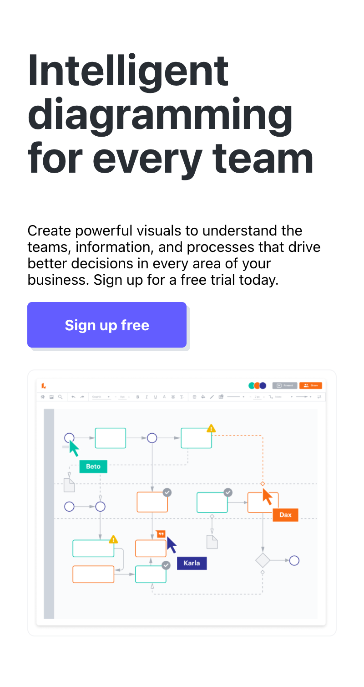
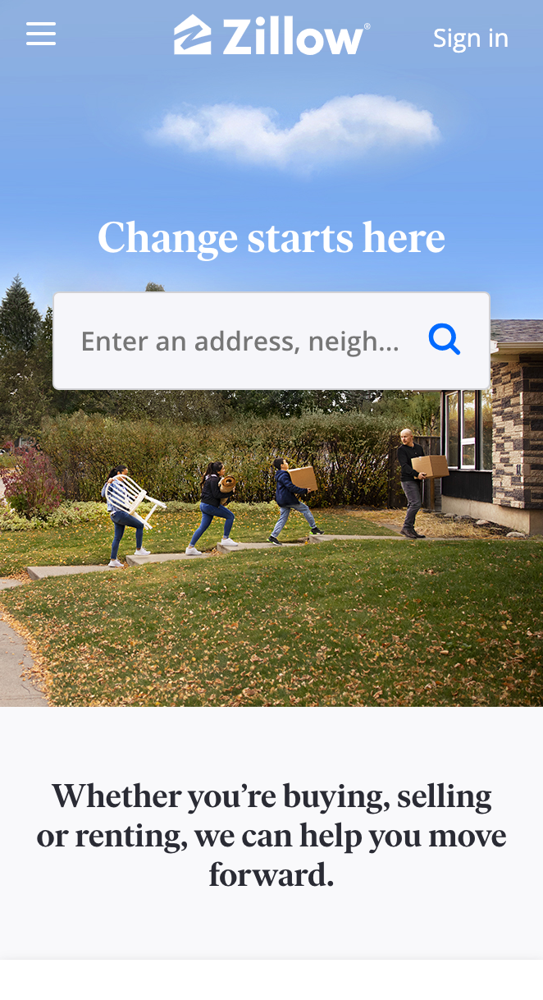
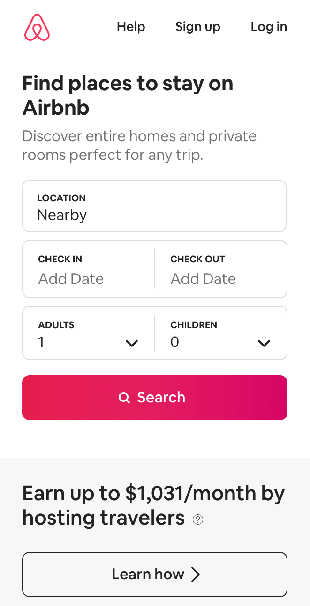

Visual Hierarchy
www.lucidchart.com
Lucidchart does a great job with visual hierarchy through guiding your eyes first to the sign up button, and then to other parts of the page. With the bright purple button, your eyes naturally gravitate to that portion, and then to the bold black text above, and then to the image of their service.
Contrast
www.zillow.com
Zillow is able to use contrast to make their search bar stand out. Search bars can be harder to make the focal point of a website because you often want the search bar to be white. Zillow makes their search bar stand out by putting it against a dark and busy background.
Alignment
www.airbnb.com
Airbnb does a great job at aligning each edge with each other, and it creates a clean and simple page. They line up each box with the one above and below, and their search bar is the same width as the boxes above.